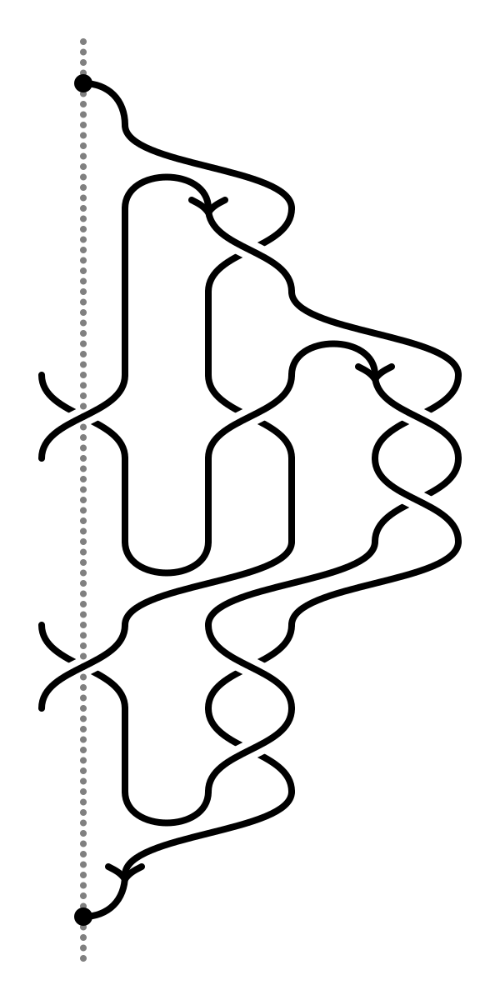

show all invariants|show all metadata
Input data and context

% s.l1.x2.r3.x4.y0.y2.x4.u1.x2.y0.y2.u1
s.l1.x2.r3.x4.y0.y2.x4.u1.x2.y0.y2.u1
,1
% Fixed orientations: s.r1.x2.r3.x4.y0.y2.x4.u1.x2.y0.y2.u1,0
% Simplifies with options '-qs' to l0.x1.l2.y1.y1.x2.y0.x1.x3.x2.x2.x1.r0.x1.y2.r2.y3.y1.x2.u1.x5.x4.y3.y2.x1.u0.x0.x1.u2.y0.y0.y0.y0.y0.y0.y0.y0.y0.y0.y0.y0.y1.y0
Bar-Natan multicurve \(\mathrm{\widetilde{BN}}(T)\)
options -c2-qs
(diagram)
(metadata)
% file 'examples/words/w44b2f87a8a/cxBNr-c2-qs', generated by kht++ 0.1 on Mon Nov 16 17:22:54 2026 UTC
1) h^-2 q^14 δ^9 ⬮~~S~>⬯—>⬯~>⬯—>⬯~>⬮—>⬮<~⬯<—⬯<~⬯<—⬯<~⬮<—
2) h^ 0 q^18 δ^9 ⬮~~S~>⬯—>⬯~>⬯—>⬯~>⬮<—⬮~>⬯—>⬯~>⬯—>⬯~>⬯—>⬯~>⬯—>⬯~>⬯—>⬯~>⬯—>⬯
Khovanov multicurve \(\mathrm{\widetilde{Kh}}(T)\)
options -c2-qs
(diagram)
(metadata)
% file 'examples/words/w44b2f87a8a/cxKhr-c2-qs', generated by kht++ 0.1 on Mon Nov 16 17:22:54 2026 UTC
1) h^-3 q^13 δ^19/2 ⬮~~S~>⬯—>⬯~>⬯—>⬯~>⬮—>⬮<~⬯<—⬯<~⬯<—⬯<~⬮<— s4(∞) q^18 δ_^9
2) h^-2 q^15 δ^19/2 ⬮~~S~>⬯—>⬯~>⬯—>⬯~>⬮—>⬮<~⬯<—⬯<~⬯<—⬯<~⬮<— s4(∞) q^20 δ_^9
3) h^-1 q^17 δ^19/2 ⬮~~S~>⬯—>⬯~>⬯—>⬯~>⬮—>⬮<~⬯<—⬯<~⬯<—⬯<~⬮<— s4(∞) q^22 δ_^9
4) h^ 3 q^23 δ^17/2 ⬮~~S~>⬯—>⬯~>⬯—>⬯~>⬯—>⬯~>⬯—>⬯~>⬯—>⬯~>⬯—>⬯~>⬯<—⬯<~⬯<—⬯<~⬯<—⬯<~⬯<—⬯<~⬯<—⬯<~⬯<—⬯<~⬮<— r(-12) q^456/13 δ|^17/2